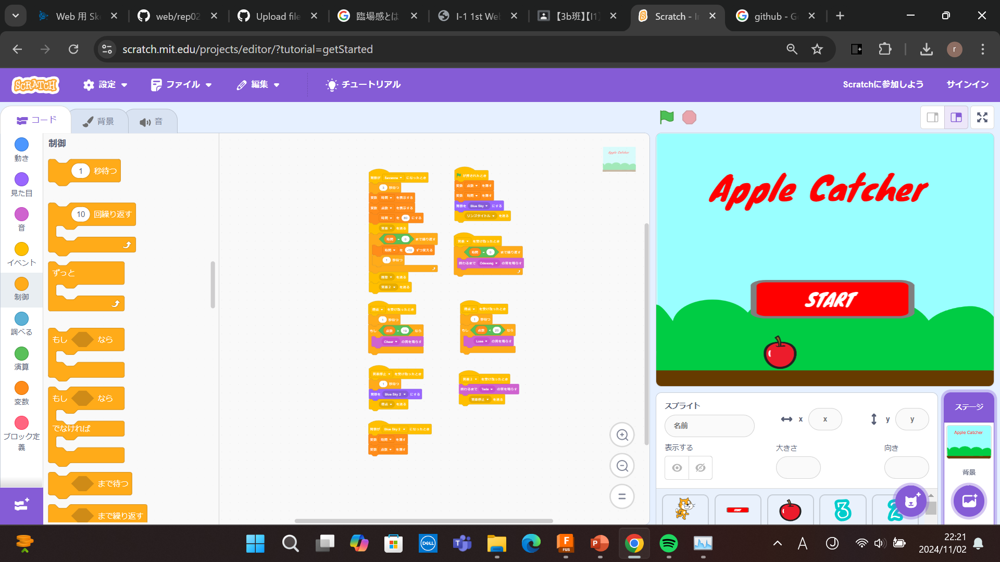

1週目のレポート ： 公大高専１年実習I-1
3b班35番 凌矢
第1週目
1-1 サイエンスアート
1.内容
スクラッチを使ってレインボーの歯車のような見た目のものを何個も上に重ねたようなアートをプログラムで作成した．
2.感想
アートを作成する際に，書き始める場所と歯車の中をすべて塗りつぶさないように終わる場所を工夫することでアートが立体に見えるようになり，出来栄えがよくなった．
1-2 ゲーム

1.内容
ゲームのタイトル画面にアニメーションをいれ，startボタンを押すとApple Catcherがはじまり，60秒間猫を移動させ，リンゴを拾い，最後に60秒間で拾ったリンゴの数を全画面に表示するプログラムを作成した．
2.感想
Scratchでプログラムを組み立てて，想像している通りに動く嬉しさと，プログラムがうまくいかなかったとき「どのようにすればうまくいくのか？」という考察がとても楽しかった．
1-3 ホームページ作成
私のホームページ
1.内容
私の自己紹介を行っています．
2.感想
web上で簡単に世界中の人に自己紹介をできる利便性を知ると共に，簡単に自分の個人情報を乗せられてしまう恐ろしさを知った．
各ページへのリンク
1週目のレポート
2週目のレポート
3週目のレポート
私のホームページ